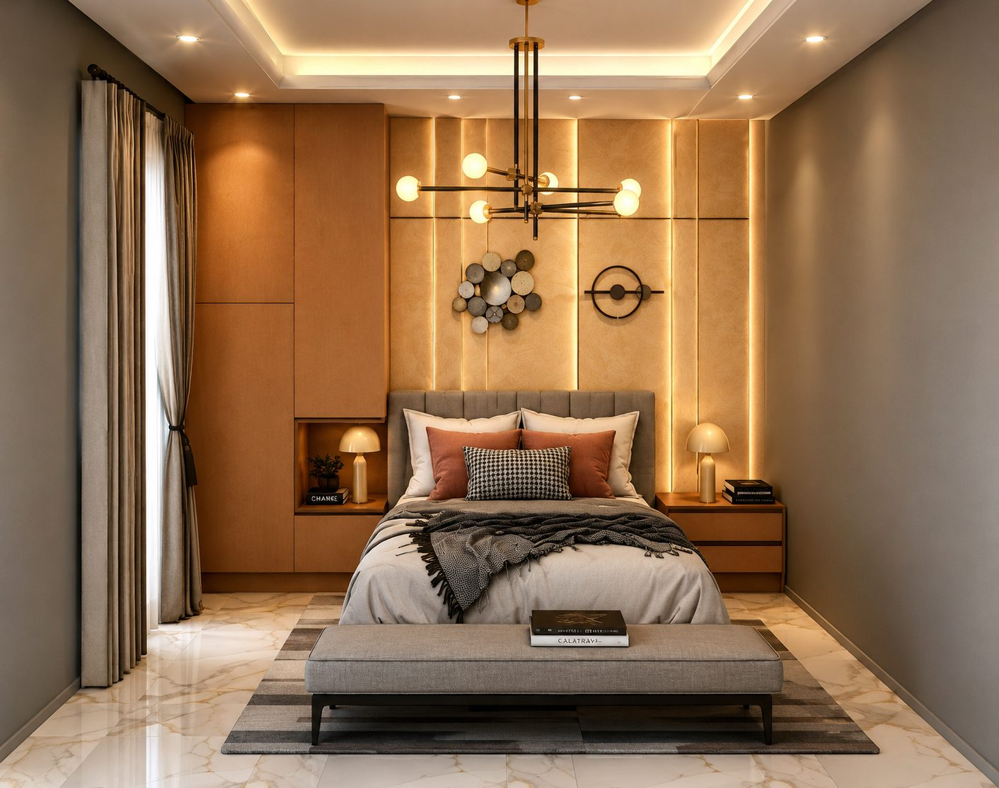
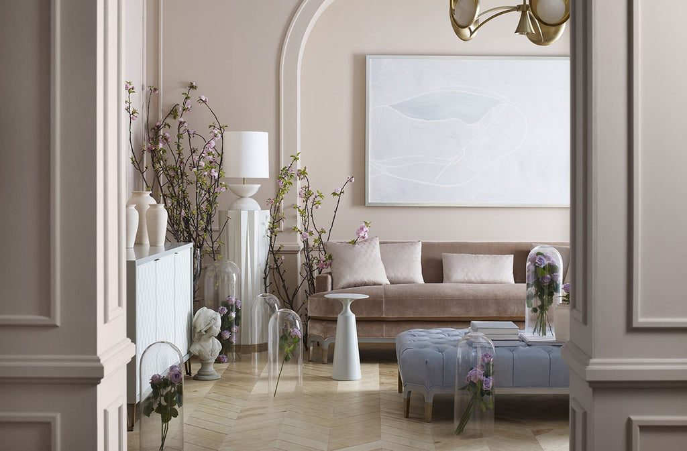

L’espace au service du bien-être
Notre vision, notre mission et la manière dont nous concevons un intérieur.
Histoire et vision
STUDIO ESPACE est né dans le cadre de notre formation en architecture d’intérieur à l’Institut des Beaux-Arts et de l’Innovation (IBAI), Université de Garoua. C’est un studio de projet : il rassemble nos concepts, nos exercices et nos recherches de design.
Notre vision : des intérieurs contemporains, chaleureux et adaptés au Nord-Cameroun, où le design africain moderne dialogue avec des lignes simples.
Notre mission
Imaginer, concevoir et transformer les espaces en proposant des solutions claires, confortables et esthétiques, expliquées pas à pas.

Nos valeurs
Créativité
Des idées originales, nourries par le design contemporain et les inspirations africaines.
Fonctionnalité
Un espace doit d’abord servir : circulation, rangements et usages bien pensés.
Esthétique
Proportions, matières et lumière composées avec soin.
Confort
Des intérieurs agréables à vivre, au quotidien et sur la durée.
Adaptation au climat
Ventilation, protection du soleil et matières adaptées à la chaleur du Nord-Cameroun.

Notre approche de conception
- Écouter Un premier échange sur vos usages, votre budget et vos envies.
- Analyser Mesures du lieu, lumière, chaleur, circulation et contraintes.
- Concevoir Plans, choix de couleurs et de matières, mobilier adapté.
- Visualiser Images 3D et propositions pour décider avant d’agir.
Les étudiants concepteurs
BAI FELIX
Étudiant en architecture d’intérieur
Matricule : CM-Uga-23IBAI0022
YOUSSOUF DAHDAI
Étudiant en architecture d’intérieur
Matricule : CM-Uga-23IBAI0028
Studio de projet académique. STUDIO ESPACE n’est pas une agence établie : il n’a ni clients réels ni chantiers livrés. Les projets présentés sont des concepts et des exercices de conception réalisés dans le cadre de notre formation.